6T SRAM HSPICE 测试方法、物理意义与本次结果说明
本文件用于一次小型科研展示，重点说明 6T SRAM 的关键测试量如何定义、如何在 HSPICE 中设置、如何从曲线中读数，以及本次 No-RC 与 RC 两种配置各自得到的结果。两组结果不定义为优劣竞争，只作为不同电路条件下的仿真输出。
1. 6T SRAM 单元与三种工作状态
典型 6T SRAM 由两个交叉耦合反相器保存一个 bit，两个 access NMOS 由字线 WL 控制，用于把内部节点 Q/QB 接入位线 BL/BLB。保持态时 WL 关闭，cell 与位线隔离；读操作前 BL/BLB 通常预充到高电平，WL 打开后由存储节点通过 access 管对其中一根位线产生微小放电；写操作时外部 write driver 强制 BL/BLB 为目标数据，WL 打开后覆盖原锁存状态。
保持态：WL 关闭，内部锁存
读操作：预充位线，检测差分
写操作：位线强制翻转 cell
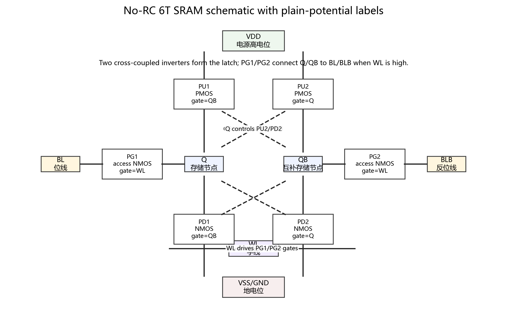
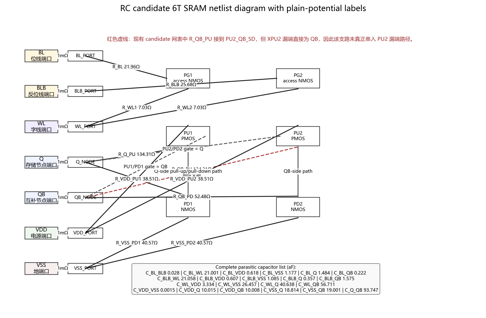
2. 本次测试条件与结果汇总
| 配置 | HSNM (mV) |
RSNM (mV) |
Read disturb (mV) |
Read stability proxy (mV) |
Read delay (ps) |
Write delay (ps) |
Write-trip BL drop (mV) |
Read energy (fJ) |
Write energy (fJ) |
Hold leakage (pW) |
|---|---|---|---|---|---|---|---|---|---|---|
| No-RC | 268.0 | 108.0 | 143.7 | 206.3 | 15.2 | 37.3 | 453.4 | 0.029 | 0.039 | 1383.9 |
| RC | 267.5 | 106.0 | 145.2 | 204.8 | 15.4 | 38.5 | 449.4 | 0.043 | 0.114 | 1386.8 |
参考值不能脱离工艺节点、VDD、器件尺寸、bit-line 电容、外围电路和温度单独比较。文献中常见做法是报告相对变化、VDDmin、SNM/RSNM/WSNM、读写延迟、功耗/能量和泄漏；绝对数值随节点和模型变化很大。本次结果更适合作为流程打通后的基线数据。
3. 指标定义、HSPICE 设置与曲线读数方式
3.1 HSNM：Hold Static Noise Margin
物理意义。HSNM 衡量 SRAM 在保持态抵抗静态噪声的能力。保持态下 WL=0，cell 与 BL/BLB 隔离，稳定性主要由两个交叉耦合反相器决定。
测试条件。保持态 DC：WL=0，Q/QB 由交叉耦合反相器自保持；BL/BLB 不作为驱动端参与读写。
测试方法。对两个互补反相器做 DC butterfly 曲线；在左右两个 lobe 中寻找最大内嵌正方形；SNM 取较小一侧正方形边长。
static bias: WL = 0 test nodes: Q, QB HSNM = min(max_square_left_lobe, max_square_right_lobe)
曲线读数。图中的正方形边长就是 HSNM。
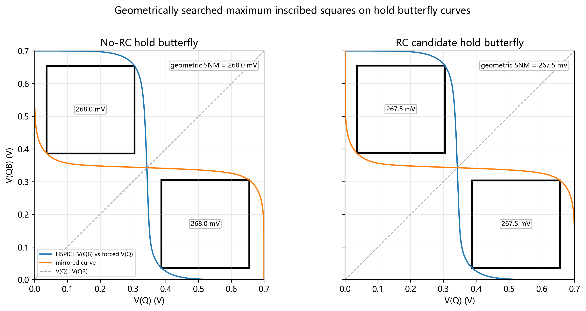
3.2 RSNM：Read Static Noise Margin
物理意义。RSNM 衡量读操作中 cell 抵抗读破坏的能力。读态下 WL=1、BL/BLB 预充到 VDD，低电平存储节点会被 access 管与位线耦合抬高，因此 RSNM 通常小于 HSNM。
测试条件。读态 DC：WL=VDD，BL=BLB=VDD；Q/QB 先分别设为互补初态，然后在交叉反馈路径注入静态噪声。
测试方法。本流程使用 read-mode noise-source sweep：在交叉反馈路径中注入相反方向的等幅噪声 VN，扫描 VN，找到 Q/QB 发生翻转的临界点。
static read bias: WL = VDD, BL = BLB = VDD test sweep: VN = 0 → 0.5 V, step = 1 mV test nodes: Q, QB RSNM = min(VN_critical_Q1, VN_critical_Q0)
曲线读数。RSNM 是横轴噪声源 VN 的临界值，而不是 Q 或 QB 的纵轴电压。临界区应放大显示。
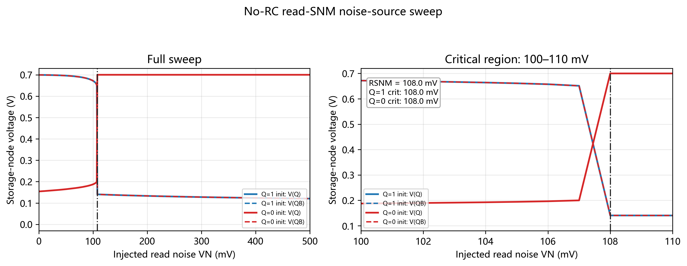
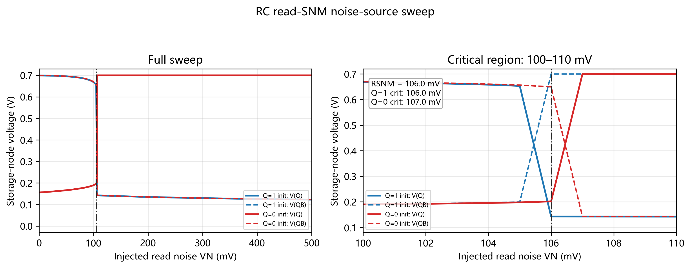
3.3 Read disturb 与读稳定性辅助量
物理意义。Read disturb 是读窗口内原本为低电平的内部节点被抬高的最大电压。这个量越大，说明读操作对 cell 内部状态扰动越强。
测试条件。读瞬态：初态 Q=1, QB=0；BL=BLB=VDD 预充；WL 从 0 上升到 VDD；测试窗口为读操作窗口。
计算方法。从 transient 读波形中，在 WL 开启后的读窗口内取低电平存储节点的最大值。本流程同时给出辅助量 VDD/2 - read_disturb，用于描述距离反相器中点的瞬态余量。
dynamic read bias: initial Q=1, QB=0; BL=BLB=VDD; WL: 0→VDD test window: read window test node: stored-low node QB read_disturb = max(Vlow_node) during read window read_stability_proxy = VDD/2 - read_disturb
参考说明。该 proxy 不是标准 RSNM，不能替代 SNM 类指标；它适合解释瞬态读波形中低节点是否被严重抬高。
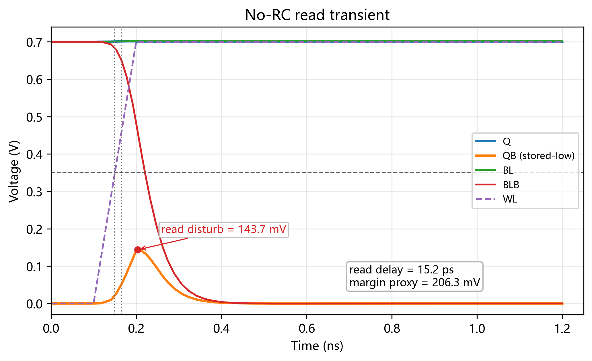
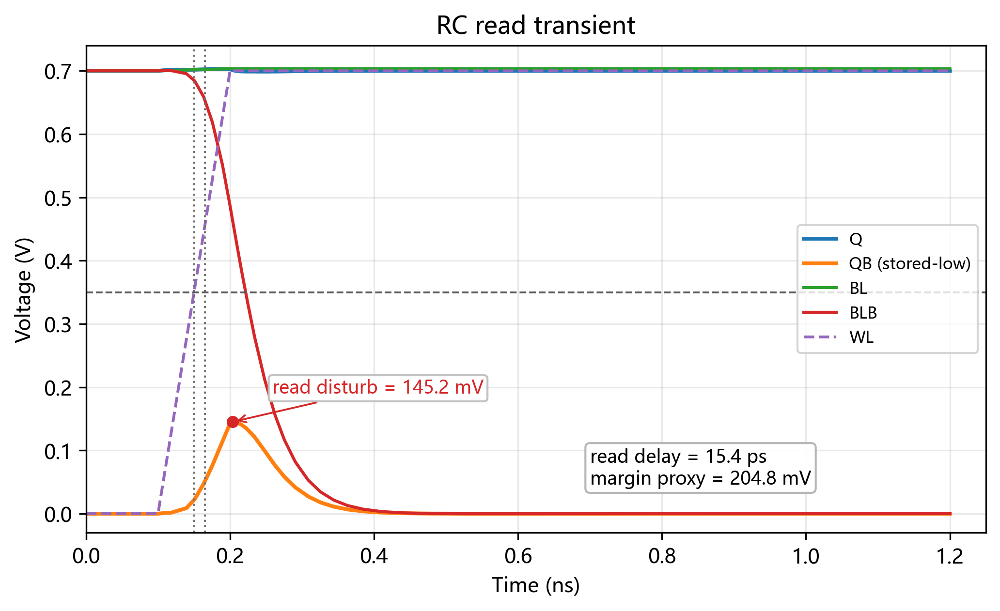
3.4 Read delay
物理意义。Read delay 衡量 cell 把存储信息转化为可检测 bit-line 差分所需的时间。实际芯片中 sense amplifier 的灵敏度决定所需差分阈值；本流程使用 50 mV 作为统一判据。
测试条件。读瞬态：初态 Q=1, QB=0；BL=BLB=VDD；WL 上升触发读出；测试点为 WL 与差分位线 BL-BLB。
dynamic read bias: initial Q=1, QB=0; BL=BLB=VDD; WL: 0→VDD start point: WL = 0.5·VDD end point: BL - BLB = 50 mV read_delay = t(BL - BLB = 50 mV) - t(WL = 0.5·VDD)
曲线读数。从 BL−BLB 曲线读取首次达到 50 mV 的时间，并减去 WL 上升到半电源的时间。
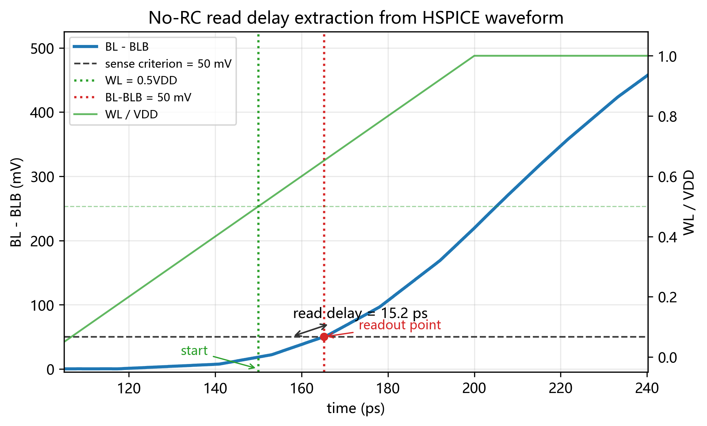
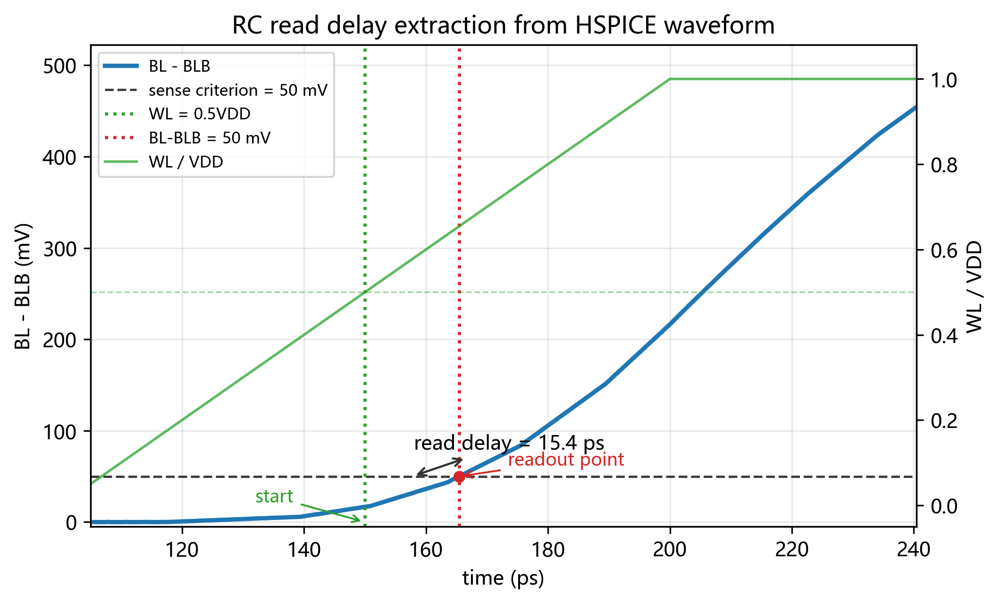
3.5 Write delay 与 Write-trip BL drop
物理意义。Write delay 表示写入操作触发后 cell 内部节点翻转到中点所需时间；Write-trip BL drop 表示写 0 时需要把 BL 从 VDD 拉低多少才能触发翻转，是写入难度的 proxy。
测试条件。写 0 瞬态：初态 Q=1, QB=0；写驱动设置 BL=0, BLB=VDD；WL 上升到 VDD。Write-trip 使用 DC/准静态 BL sweep，WL 保持打开。
dynamic write-0 bias: initial Q=1, QB=0; BL=0, BLB=VDD; WL: 0→VDD write-delay start point: WL = 0.5·VDD write-delay end point: Q = 0.5·VDD write_delay = t(Q = 0.5·VDD) - t(WL = 0.5·VDD) write-trip DC bias: WL=VDD, BL swept from VDD to 0, BLB=VDD write-trip test point: Q=QB crossing write_trip_BL_drop = VDD - VBL_at_Q/QB_crossing
曲线读数。write delay 从 transient Q/QB 波形读；write-trip 从 DC 或准静态 BL sweep 中读 Q/QB 交叉点对应的 BL 电压。
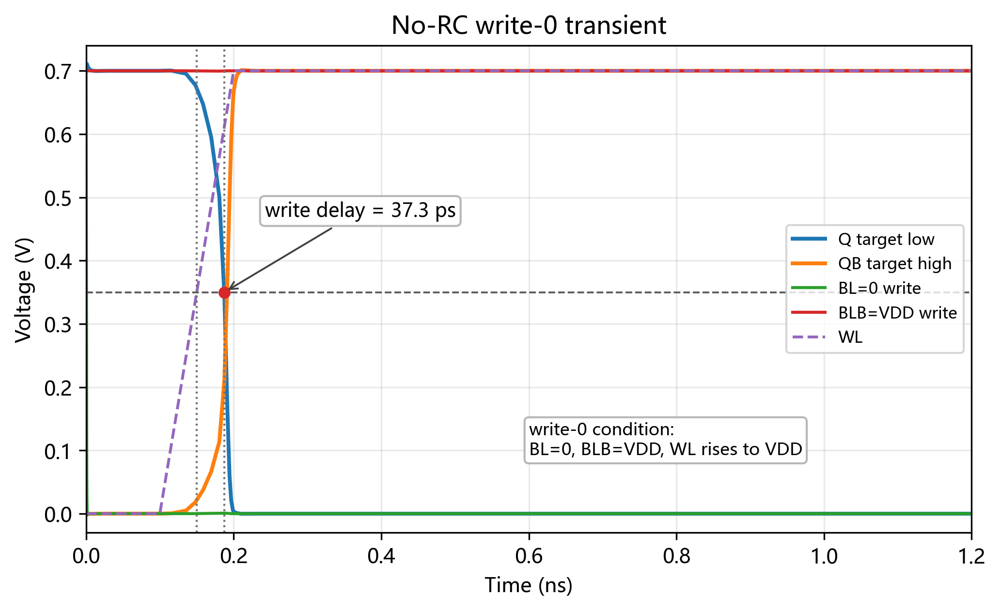
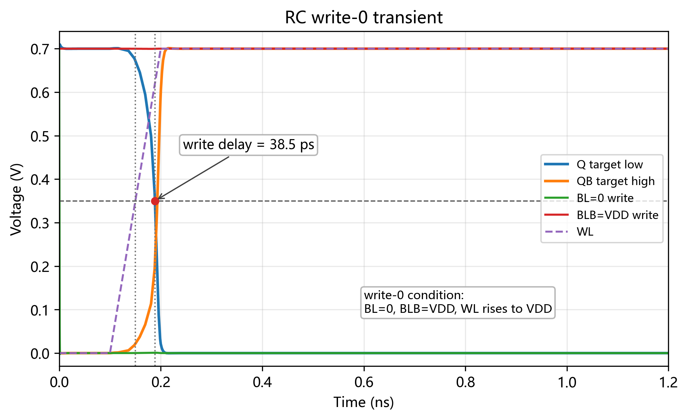
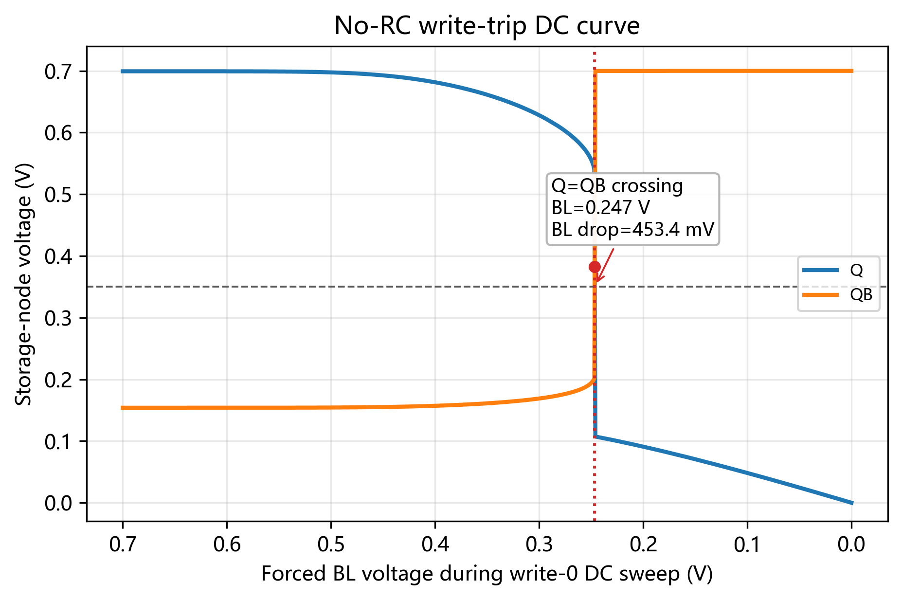
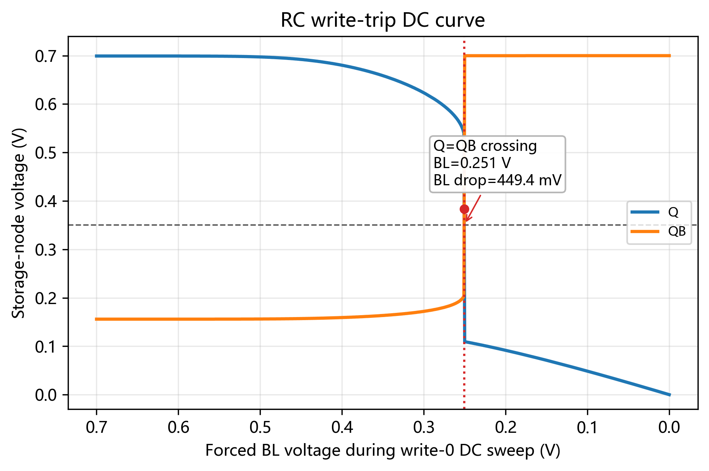
3.6 Read/write energy 与 hold leakage
物理意义。读写能量由电源端瞬时功率在指定操作窗口内积分得到；hold leakage 是保持态电源端平均静态功率。
测试条件。读能量使用读瞬态窗口 0.2–1.2 ns，初态 Q=1, QB=0，BL=BLB=VDD，WL 上升读出；写能量使用写 0 瞬态窗口 0.2–1.2 ns，BL=0, BLB=VDD，WL 上升写入；泄漏功耗使用保持态 DC，WL=0。
read energy test: read transient, integrate 0.2–1.2 ns write energy test: write-0 transient, integrate 0.2–1.2 ns power test point: VDD source current I(VDD) Eread/write = ∫window VDD · |I(VDD)| dt hold leakage bias: WL=0, Q/QB held, no read/write switching Pleak_hold = average(VDD · |I(VDD)|)
曲线读数。先从 HSPICE transient 得到电源电流，再计算瞬时功率并对指定窗口积分。窗口设置必须与读写操作时序一致。
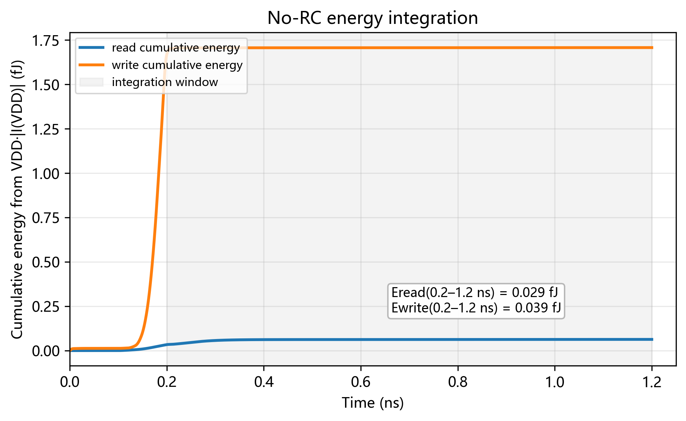
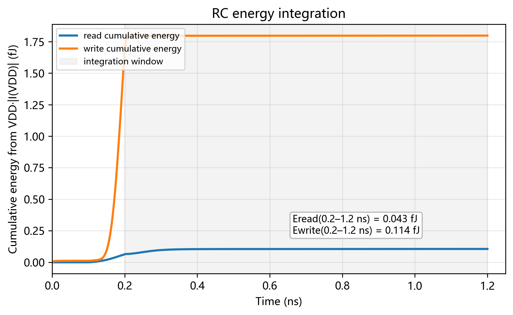
4. SRAM 指标在 DTCO 中的作用
| 指标 | 对应设计问题 | 对 DTCO 的意义 | 常见参考方式 |
|---|---|---|---|
| HSNM | 保持态是否容易受噪声或失配翻转 | 决定 cell ratio、pull-up/down 强度、VDDmin 和保持可靠性 | 通常与 VDD、工艺节点、温度和 mismatch 条件一起报告 |
| RSNM | 读操作是否会破坏原存储状态 | 直接约束 access 管与 pull-down 管强弱比、读 assist、bit-line 预充策略 | 常小于 HSNM；低压/近阈值设计中特别关键 |
| Write-trip / WSNM | 写入驱动是否足以覆盖原锁存状态 | 影响 access 管尺寸、write driver、write assist 和 VDDmin | 用 BL sweep、N-curve 或 noise margin 方法报告 |
| Read/write delay | cell 能否在时序预算内完成读写 | 约束 bit-line 电容、阵列列高、sense amplifier 判据、RC parasitics | 需明确触发点和判据，例如 WL=0.5VDD 到 ΔBL=50mV |
| Energy/leakage | 读写一次和静态保持的功耗代价 | 用于面积-速度-功耗折中，尤其是大容量 cache 阵列 | 需明确积分窗口、bit-line 负载、外围电路是否计入 |
5. 本次结果的使用边界
- 本文件中的 No-RC 与 RC 是两种电路条件下的结果列表，不把其中一个定义为 benchmark 或目标。
- 当前数值适合作为后续 VA、RC、布局寄生参数变化后的流程基线；不建议脱离本次 testbench 与模型条件，与其他论文绝对数值直接比较。
- 若后续用于论文级 benchmark，需要补充 PVT corner、Monte Carlo mismatch、不同 VDD、bit-line 长度/电容、sense amplifier/write driver 条件，并统一判据。
- 如果只做流程打通，当前最重要的是每个指标都有可复现的 HSPICE deck、数据抽取脚本、曲线图和数值表。
6. 参考资料
以下资料用于确认 6T SRAM 基本结构、读写操作、SNM/RSNM/写入能力/功耗等指标在 SRAM 分析中的常见用法。不同文献的节点、电源和 testbench 不同，因此本文件只引用指标定义和测试逻辑，不直接套用绝对数值作为硬性 benchmark。
- Static random-access memory — 6T SRAM structure, standby/read/write operation overview
- Performance Analysis of 6T and 9T SRAM — SNM, read/write ability and scaling discussion
- A 65-nm Reliable 6T CMOS SRAM Cell with Minimum Size Transistors — cell ratio, read stability, leakage and energy trade-off
- Proposal of a FET-LET Hybrid 6T SRAM — read/write delay and energy metrics for SRAM cell/array analysis